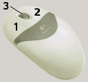
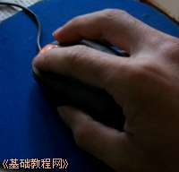
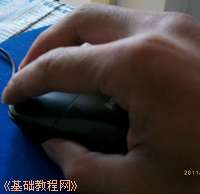
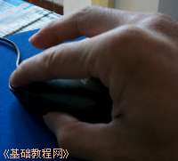

Windows7 基础入门教程
作者：TeliuTe 来源：基础教程网
使用鼠标 返回目录 下一课要想熟练地操作电脑就必须要学会操作鼠标；
1、使用鼠标
1）鼠标已经成为操作电脑的必备工具，包括左键、右键和滚轮；

2）抓握鼠标的方法是用手掌心轻轻贴着鼠标，拇指和小指轻轻抓在鼠标的两侧，

3）再将食指和中指自然弯曲，轻轻贴在鼠标的左键和右键上，第四个无名指自然落下跟小指一起抓在侧面，
4）这时拇指、食指、中指的指肚贴着鼠标，无名指和小指的内侧面握住鼠标侧面，稍稍向下用力，
5）胳膊的重量落在手臂上，保持手臂不动，左右晃一下手腕，鼠标前后不动、很平滑移动不跳跃；
2、移动鼠标
1）左右移动时手臂不动，拇指和小指、无名指轻轻卡住鼠标，手腕左右晃动，鼠标就会跟着移动了，食指和中指轻巧贴着鼠标，别帮倒忙；

2）前后移动要稍微难一些，拇指和小指、无名指还是要轻轻卡住鼠标，稍稍向下压住，
如果长距离移动，就用胳膊移动来继续移动鼠标，
3）如果鼠标跑得太远了，拿回来的方法是：轻轻抓起鼠标让它悬空，提起来放回到原来的地方，由于是悬空，显示器上的指针就不会跟着动；
3、点击鼠标
1）单击鼠标表示选择或者选中，操作方法是先稳定住鼠标，稍稍压住鼠标，然后食指轻巧的按下去，再松开，键会自己弹起来并发出清脆的咔嗒声，
2）其他指头别动，一动就帮倒忙了，如果弄错了，取消的方法是在旁边空白处单击一下，再回来重试；
3）双击鼠标是表示打开、运行，操作的方法是食指快速的按两下左键，速度要稍快，声音要脆，要领是按键点到为止，轻巧地连续点两下，
如果错了，也在空白处点一下，取消了重来；
4）拖动是将一个图标拖到另一个地方去，或者画一个方框什么的，方法是食指按住后别松开，保持食指按住别松，然后向左或向右移动，

长距离移动要用胳膊，小范围的拖动，手腕移动就可以了，关键是食指别松开，一旦松开就再来一次；
练习：
1）左右移动，将鼠标指针在屏幕上移动，写一个“之”字，练习三遍，熟练为止；
2）上下移动，将鼠标指针在屏幕上移动，写一个“川”字，练习三遍，熟练为止；
3）单击，将任务栏左侧的图标从左到右挨个单击，练习三遍，中间有错误就得重新来，直至熟练为止；
单击打开窗口右上角的叉按钮关闭，练习三遍，中间有错误就得重新来，直至熟练为止；
4）双击，将桌面上“回收站”图标双击打开，注意瞄准上面图标双击，不要瞄着文字，
5）拖动，将桌面上的图标或窗口从左边拖到右边，再拖回来，如果掉了接着拖，如果变成双击打开，关掉再来，练习三遍，直至熟练为止；
6）多活动食指和中指，练习关节的灵活性和力量，经常活动手腕防止疲劳；
本节学习了使用鼠标的基本操作，如果你成功地完成了练习，请继续学习下一课内容；
本教程由86团学校TeliuTe制作|著作权所有
基础教程网：>http://teliute.org/
美丽的校园……
转载和引用本站内容，请保留版权信息和本站链接。